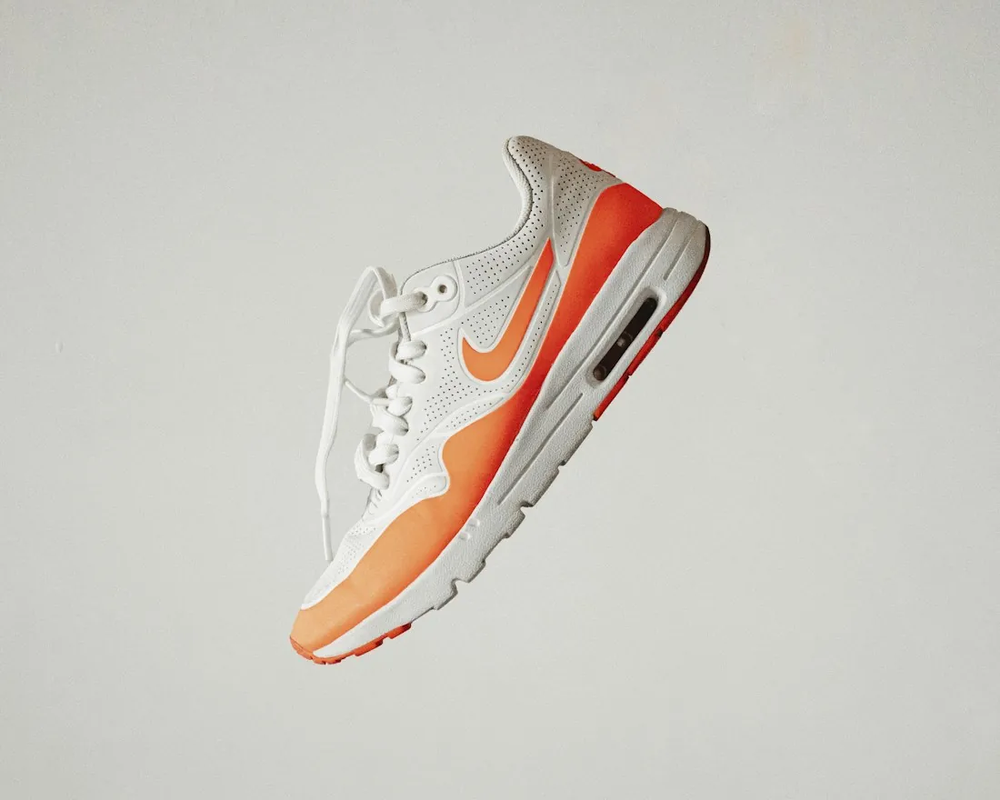
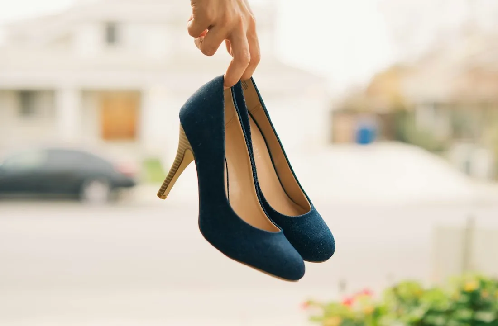
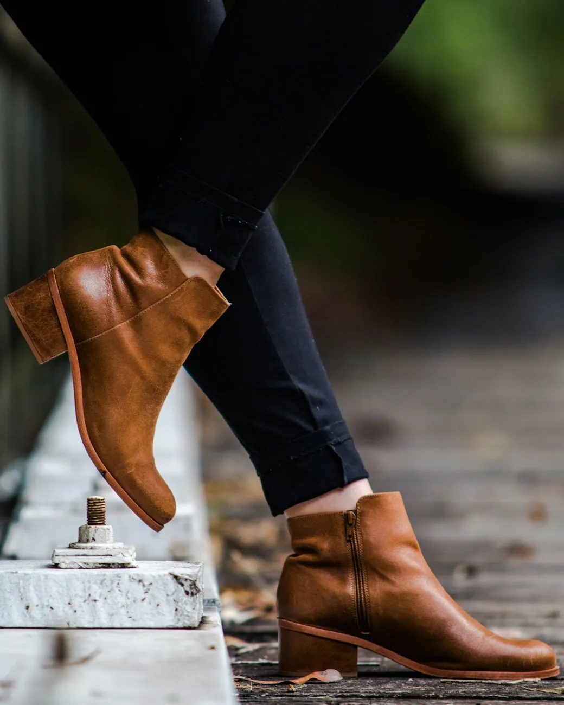

CLÁSSICOS COM UM NOVO OLHAR
Seu estilo.
Seu próximo
passo.
Do sapato que atravessa o tempo ao tênis que muda a conversa. Encontre o par que acompanha o seu jeito de viver.
Encontre seu par ↗

TRÊS JEITOS DE COMEÇAR
Qual é o seu passo de hoje?
ESCOLHAS COM PERSONALIDADE
Um par. Muitas possibilidades.

FOTOGRAFIA ILUSTRATIVANÃO É SOBRE SEGUIR UMA REGRA
É sobre encontrar
o seu próprio ritmo.
Alfaiataria com tênis. Jeans com salto. Um clássico em uma cor inesperada. A melhor combinação é a que conversa com você.
Para os dias de cidade
Tênis e peças de linhas simples criam um visual versátil. Pense na ocasião e experimente proporções.
Para mudar o ponto de vista
Um sapato estruturado ou uma sandália plataforma pode ser o destaque. Deixe o restante do look respirar.
ANTES DE ESCOLHER O SEU PAR
Bom estilo começa
com uma boa escolha.
Formato, ocasião e ajuste importam. Use a numeração como ponto de partida, não como promessa de encaixe perfeito.
Como medir os pés em casa?
Apoie uma folha no chão junto a uma parede. Em pé, encoste o calcanhar e marque o ponto do dedo mais longo. Meça os dois pés e use a maior medida. Compare com a tabela específica do fabricante — não há uma tabela universal para todos os calçados.
Clássico ou contemporâneo: preciso escolher?
Não. Os filtros ajudam a explorar a coleção, mas não definem quem pode usar cada peça. Formas tradicionais podem aparecer em combinações modernas; tênis também podem acompanhar produções mais sóbrias.
As fotos e os preços são de uma loja real?
Não. PASSO Atelier é uma marca fictícia. As fotografias são referências de banco, podem mostrar marcas de terceiros e não representam produtos fabricados ou vendidos pela PASSO. Preços e tamanhos são exemplos; materiais e disponibilidade precisam ser confirmados em uma loja real.
A sacola envia um pedido ou recebe pagamento?
A sacola monta um resumo demonstrativo que você pode copiar. Não há cobrança, reserva de estoque, frete ou pedido enviado. Para implantar uma loja, o responsável precisa configurar catálogo real, operação, políticas e meios de atendimento ou pagamento.
UMA EXPERIÊNCIA MOSS DIGITAL
Sua loja pode dar
o próximo passo.
Este é um modelo de site. Converse sobre uma versão com a identidade e os produtos do seu negócio.